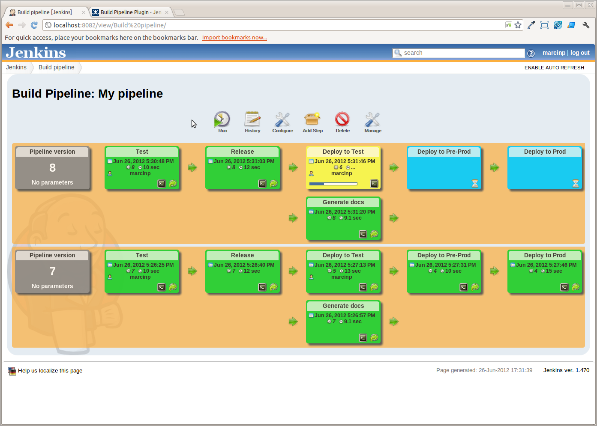
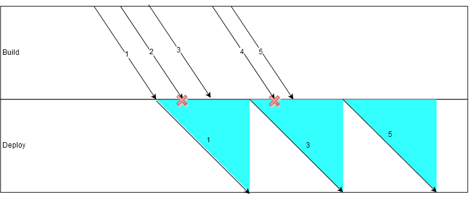

Jenkins Workflow
15 décembre 2015
Jean Detoeuf
Concepteur-développeur
Passionné de nouvelles technologies
#jvm #docker #craftmanship #rpi #diy

Sondage
- Intégration continue
- Livraison continue
- Déploiement continu
Intégration Continue
Jenkins


Et beaucoup d'autres
Pourquoi Jenkins ?
- CI le plus utilisé
- Extensible
- Stable
- Open Source
- Communauté
- Livraisons régulières
- Vieillissant par rapport à la concurrence ?
Jobs classiques
Comment enchaîner du build au deploy ?
Histoire de faire du déploiement continu
En chaînant les jobs

Oui, mais pour suivre l'enchaînement ?
Pipeline plugin !

Problème
- Complexe à mettre en oeuvre
- On finit par avoir des jobs "étapes"
- File d'exécution impossible à lire
- Un job a des successeurs prédéterminés
- Le paramétrage se fait dans Jenkins
- Solution peu utilisable pour du déploiement continu
Déploiement Continu
Le but du déploiement continu est d'avoir une application stable en production.
La chaine de livraison doit être automatisée au maximum pour réduire l'intervention humaine entre une modification de code et sa livraison en production.
L'erreur est humaine
Quel intervale de temps entre deux MEP ?
Ce n'est pas le but premier du déploiement continu.
Pouvoir livrer rapidement ne veut pas dire livrer régulièrement.
Go Delivery
- Un build est composé d'étapes
- Chaque build peut être appliqué à un environnement
- Fan-out-in (parallelisation des étapes)
Go Delivery
Bonnes idées
- Parallèlisation des étapes
- Environnements de déploiement
- Visualisation du build et de l'étape en cours
- Possibilité d'avoir plusieurs repositories en entrée
Problèmes
- Configuration gérée dans l'outil
- Pas de possibilité de scripter le job
- Difficulté pour gérer plusieurs versions nécessitant des jobs différents
Jenkins Workflow Plugin

Plugin(s)
- Ajout à une installation existante
- Nouveau type de job
Scripter le job
et mettre le script avec les sources
Script standard
- Ecrit en shell
- S'exécute sur un noeud (maître ou esclave)
Jenkinsfile
Fichier de build en Groovy
Du build au deploy dans un fichier compréhensible
Permet une orchestration plus avancée
Convention de nommage : Jenkinsfile
node {
git url: 'https://github.com/spring-projects/spring-petclinic.git'
def mvnHome = tool 'M3'
sh "${mvnHome}/bin/mvn -B verify"
}Jenkinsfile
- Le base de code déclare elle-même comment s'installer
- Différentes versions (tags/branches/commits) peuvent avoir des manières différentes de s'installer
node {
git url: 'https://github.com/spring-projects/spring-petclinic.git'
def mvnHome = tool 'M3'
sh "${mvnHome}/bin/mvn -B verify"
}Actions fournies par Workflow
Commande shell
sh 'ls /tmp'bat 'dir C:\tmp'Pour reprendre un script standard, il suffit de reprendre toutes les lignes du script comme ceci
Echo (print)
echo 'Compilation'try-catch-finally
try {
checkpoint('Before production')
} catch (NoSuchMethodError _) {
echo 'Checkpoint feature available in CloudBees Jenkins Enterprise.'
}for-loops
files.each{ file ->
sh "check.sh $file"
}
for num in 1..10
sh "echo $num"
}
Outils
def mvn(args) {
sh "${tool 'Maven 3.x'}/bin/mvn ${args}"
}
mvn 'clean install'Validation humaine
input 'Est-ce que la page ${url} est correcte ?'Si cette validation intervient avant le déploiement, on fait de la livraison continue
Choix du noeud d'exécution
node('unix && 64bit') {
sh 'make install'
}Paramètres
Exposées sous forme de variables d'environnement
Shell
$VARGroovy
env.VARParallèlisation
Parallel
for (int i = 0; i < splits.size(); i++) {
branches["split${i}"] = {
node('remote') {
sh 'rm -rf *'
sh "${tool 'M3'}/bin/mvn -B -Dmaven.test.failure.ignore test"
}
}
}
parallel branches- parallel prend une map en paramètre
- la clé représente le nom de la branche
- la valeur correspond au bloc de code à exécuter
Parallel
Stage
- Permet de séparer le phases du job
- Permet de limiter le nombre d'exécutions parallèles
stage 'build'
sh "${tool 'M3'}/bin/mvn clean install"
stage concurrency: 1, name: 'deploy'
sh 'mv target/app.war /tmp/webapps/'
Stage
stage 'build'
sh "${tool 'M3'}/bin/mvn clean install"
stage name: 'deploy', concurrency: 1
sh 'mv target/app.war /tmp'
- Tant que le stage deploy n'est pas terminé, les exécutions suivantes s'arrêtent avant deploy
- Si plusieurs exécutions sont en attente de deploy, c'est la dernière qui est retenue.
Stage

Chargement d'un fichier de script
node{
def install = load 'install.groovy'
install.main()
}Permet de diviser le script de build en plusieurs parties
Suivi à l'IHM : Open Source

Liens pour afficher les logs de chaque étape
Suivi à l'IHM : Cloudbees Edition
Longue installation
- Les builds de Workflow survivent à un redémarrage de Jenkins
- Le thread d'orchestration ne s'exécute que pour lancer la prochaine tache
Résumé
- Une orchestration intégrée à la base de code
- Un langage expressif (DSL workflow et Groovy)
- Parallèlisation et distribution des tâches
- Pipeline de déploiement continu
Questions ?
Merci pour votre écoute
 @thebignet
@thebignet thebignet
thebignet- Cette présentation : talk-jenkins-workflow